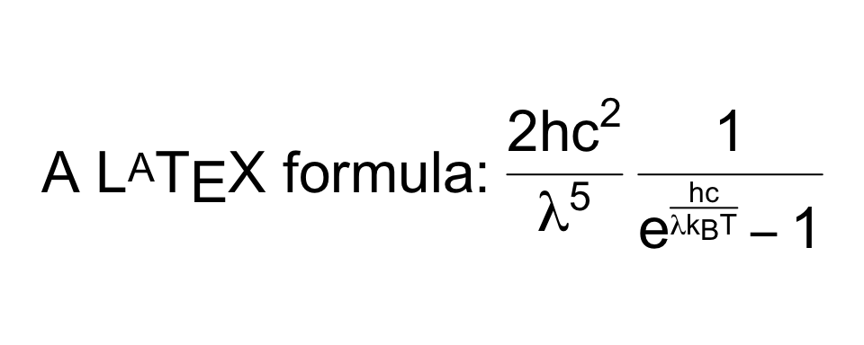
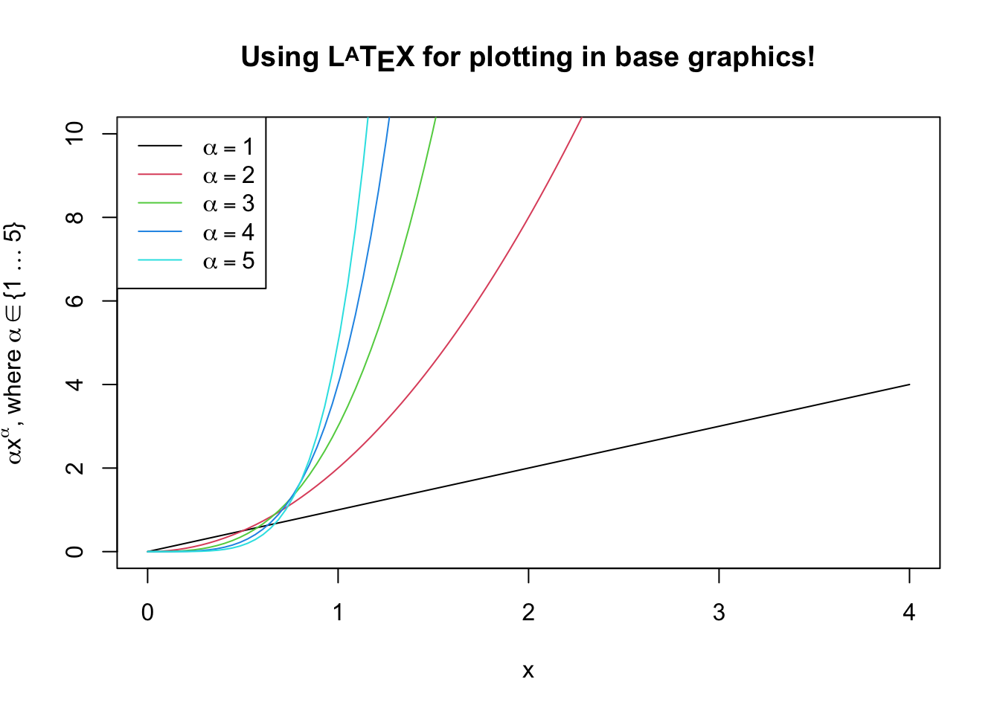
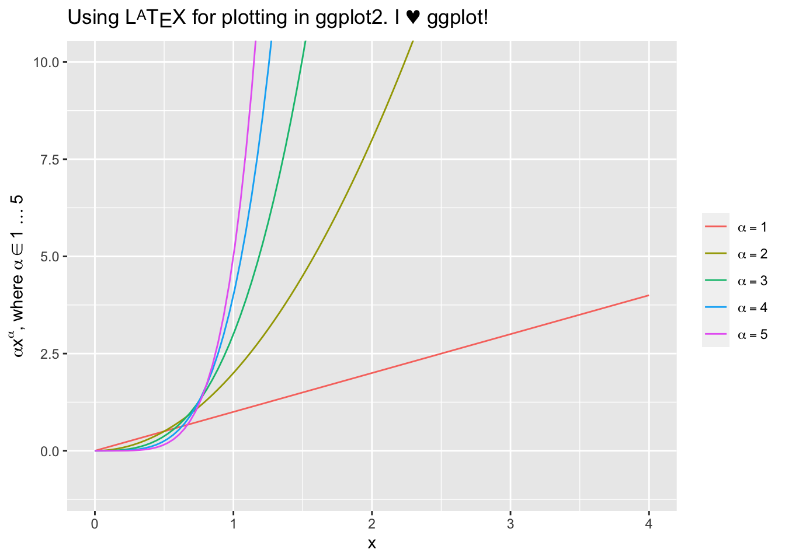
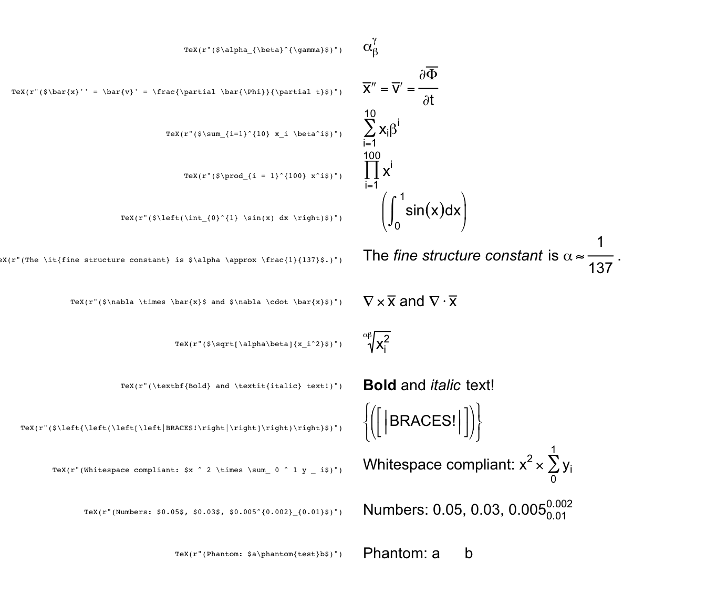

latex2exp is an R package that lets you use LaTeX in plots. It parses and converts LaTeX to R’s custom plotmath expressions. You can read the full documentation on the package’s website.
Expressions returned by latex2exp can be used to create formatted text and mathematical formulas and symbols to be rendered as axis labels, annotations, legends, titles, etc. throughout R’s plotting system.
Installation
Install this package from CRAN:
install.packages('latex2exp')You can also install the development version from GitHub using devtools:
devtools::install_github('stefano-meschiari/latex2exp')Usage
The TeX function takes a LaTeX string, parses it, and returns the closest plotmath expression suitable for use in graphics. The return value of TeX() can be used anywhere a plotmath expression is accepted, including plot labels, legends, and text for both base graphics and ggplot2.
Here’s a simple example:
# Use raw strings, no need to escape backslashes.
TeX(r"(\textbf{Euler's identity} is $e^{i\pi} + 1 = 0$.)")In this example, \textbf{} is used to mark a fragment of text as bold, $ introduces inline math mode, ^{} typesets its contents as superscript, and \pi typesets the letter π.
Starting with R 4.0, it is recommended to use the new raw string literal syntax (see ?Quotes). The syntax looks like r"(...)", where ... can contain any character sequence, including \.
Another option is to escape the backslash character (\) for LaTeX commands, such that the command will be written as \\command rather than \command. This will also work on versions of R older than 4.0:
# Equivalent to the previous code fragment.
# Use regular strings, but escape the backslashes.
TeX("\\textbf{Euler's identity} is $e^{i\\pi} + 1 = 0$.")You can quickly preview what a translated LaTeX string would look like by using plot:
plot(TeX(r'(A $\LaTeX$ formula: $\frac{2hc^2}{\lambda^5}\frac{1}{e^{\frac{hc}{\lambda k_B T}} - 1}$)'), cex=2, main="")
The following example shows plotting in base graphics:
x <- seq(0, 4, length.out=100)
alpha <- 1:5
plot(x, xlim=c(0, 4), ylim=c(0, 10),
xlab='x', ylab=TeX(r'($\alpha x^\alpha$, where $\alpha \in \{1 \ldots 5\}$)'),
type='n', main=TeX(r'(Using $\LaTeX$ for plotting in base graphics!)', bold=TRUE))
for (a in alpha) {
lines(x, a*x^a, col=a)
}
legend('topleft',
legend=TeX(sprintf(r'($\alpha = %d$)', alpha)),
lwd=1,
col=alpha)
This example shows plotting in ggplot2:
x <- seq(0, 4, length.out=100)
alpha <- 1:5
data <- map_df(alpha, ~ tibble(v=.*x^., x=x, alpha=.))
p <- ggplot(data, aes(x=x, y=v, color=as.factor(alpha))) +
geom_line() +
ylab(TeX(r'($\alpha x^\alpha$, where $\alpha \in 1\ldots 5$)')) +
ggtitle(TeX(r'(Using $\LaTeX$ for plotting in ggplot2. I $\heartsuit$ ggplot!)')) +
coord_cartesian(ylim=c(-1, 10)) +
guides(color=guide_legend(title=NULL)) +
scale_color_discrete(labels=lapply(sprintf(r'($\alpha = %d$)', alpha), TeX))
# Note that ggplot2 legend labels must be lists of expressions, not vectors of expressions
print(p)
Here are a few examples of what you can do with latex2exp:
latex2exp_examples(cex=0.9)